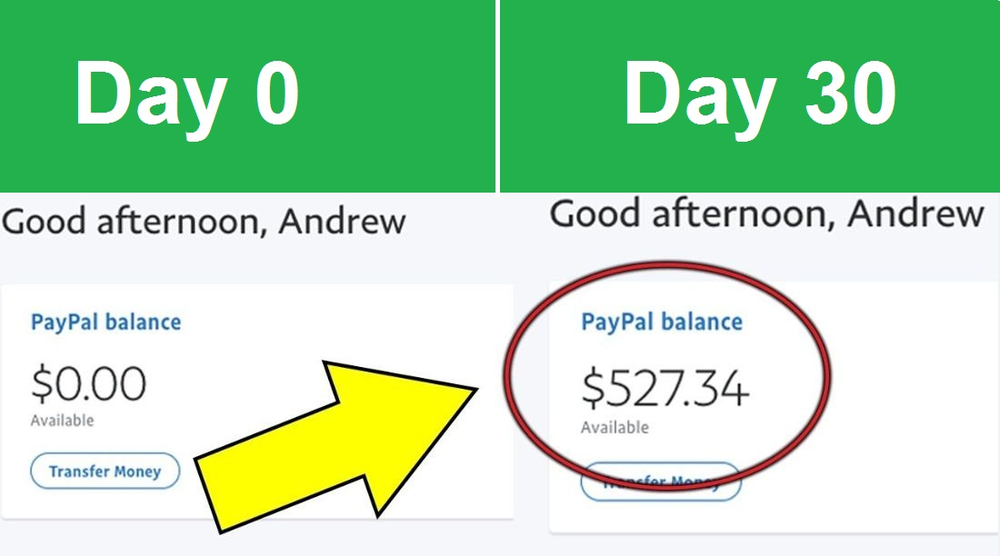
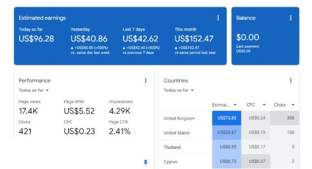

How To Earn Money Online in Nepal? | TOP TRENDING WAYS
When it comes to earning money online in Nepal, the possibilities are actually exciting. Today's digital domains offer vast opportunities to monetize skills and passions for profitable income. Whether you're a student, job holder or a parent, if you desire to showcase your talent, you might achieve a great name in this digital world.
In this article, we will guide you through the most promising and trustworthy ways to earn money online in Nepal. From freelancing to online marketplaces and content creation, we'll provide valuable insights and tips to help you maximize your earning potential working from home in Nepal.
Table of Content
- Earn Money Online in Nepal
- Top Trending Ways To Make Money Online
- Best Way To Earn Online in Nepal
- Earn Online Using Google Adsense
- Affiliate Marketing: A Source of Online Income
Quick Ways To Make Money Online From Home
Learn More: Click Here→
Earn Money Online in Nepal
Earning money online in Nepal has become increasingly popular as technology advances and connectivity improves. The internet provides a plethora of opportunities for individuals to leverage their skills and interests to generate income from the comfort of their own homes.
From freelancing and content creation to online tutoring and e-commerce, Nepali individuals can tap into the global digital market to earn money.
However, it is important to approach online earning with dedication, perseverance, and caution,
as success may require time and effort to build a sustainable online presence.
Top Trending Ways To Earn Money Online in Nepal
The top trending ways to earn money online can vary over time, but here are some popular methods that have gained a lot of traction recently:
-
Content creation: If you enjoy creating content, you can start a website blog or a YouTube channel. You can monetize your blog through advertising or sponsored content, while YouTube allows you to earn money through ads and partnerships. I recommend you to try this fields even if you're an absolute beginner, you won't be losing any money but will be investing your time creating contents. Google Adsense will help you earn your initial few 100s of dollars if you become able to gather certain number of visitors to your site or channel. Its worth investing time.
-
Affiliate marketing: You can become an affiliate marketer by promoting products or services of other companies. You earn a commission for every sale or lead generated through your unique affiliate link. You can do affiliate marketing from your website blog posts or youtube videos. This is one of the best ways to earn additional income once you've certain number of followers.
-
Online trading: If you have knowledge and experience in stock markets, you can participate in online trading platforms to earn money through buying and selling assets. Though trading and stock markets can be uncertain, but you'll be able to gather enough information about the current market trends and it can help you understand the market demand and supply. Proper investing techniques can help you make 1000s of dollars. Online stock market trade can be a great source of income.
-
Freelancing: Freelancing platforms like Upwork, Freelancer, and Fiverr allow you to offer your skills and services to clients worldwide. You can find freelance work in areas such as writing, graphic design, programming, digital marketing, and more. Though they seem tough in the beginning, but if you've skills and talents, you won't regret investing your time. You'ld be able to work with remote clients and make 100s of dollars hourly or daily. Many Nepali youths are engaging themselves in freelancing using their skills to get exposure in several fields. Try this out if you've any digital skills with you.
-
Online gaming and esports: If you are skilled in gaming, you can participate in online tournaments, streaming on platforms like Twitch, or creating gaming content on YouTube to earn money through sponsorships, donations, and ad revenue. You might have seen many youtubers and gamers who have changed their lifestyles by playing games. If you possess good gaming capabilities but lack money, you can try playing with renowned players and get exposed hrough them as well. You can try the above mentioned ways to make money at the beginning and follow your passion with them too.
How To Use ChatGPT AI To Create Content?
Learn More: Click Here→
Best Way To Earn Money Online

Inspite of having multiple top trending ways to make money online, we need to choose the best one which is easier as well as legit and visionary. So in my opinion, The best way to earn money online in Nepal is Blogging and Content Creation. But Why?
Here's The Answer: Blogging and content creation have emerged as one of the best ways to earn money online in Nepal due to several compelling reasons.
Firstly, The low barrier to entry makes it accessible to anyone with a passion for writing or sharing their expertise. With just a computer, internet connection, and creativity, individuals can embark on their blogging journey.
Secondly, The flexibility and creativity that come with blogging allow individuals to express themselves, choose their niche, and create content in various formats, such as articles, videos, or podcasts. This freedom enables bloggers to align their blog with their unique vision and personal brand.
Furthermore, Blogging offers the potential for passive income. As a blog grows and attracts an
audience, monetization opportunities arise. Bloggers can display advertisements, partner with
brands for sponsored content, engage in affiliate marketing, or sell digital products like
e-books or online courses.
How To Start Freelancing As A Beginner in Nepal?
Learn More: Click
Here→
Earn Online Using Google Adsense

Google Adsense is a service of Google,so nodoubt it is 100% genuine. Moreover, Google AdSense is a program that allows website and blog owners to display targeted ads on their sites and earn a share of the revenue generated by clicks on those ads.
When you sign up for AdSense, you can place ad code on your website or blog that will display ads from Google's advertising network. When users click on those ads, you will earn a portion of the revenue from the advertiser.
AdSense is a great way for website and blog owners to monetize their traffic and earn additional income from their online content. Learn More
How To Get Adsense Approval in 1 Minute
Learn More: Click Here→
Affiliate Marketing: A Source of Online Earning

Affiliate Marketing is a great way to turn your passions into profits. You get to promote products that you truly believe in, and earn a commission for every sale.
It's a win-win for both you and your audience."
Whether you're a student, stay-at-home parent, or aspiring entrepreneur,
affiliate marketing offers an exciting opportunity to create a life on your
own terms and achieve financial freedom.
Learn Affiliate Marketing As A Beginner
Learn More: Click
Here→